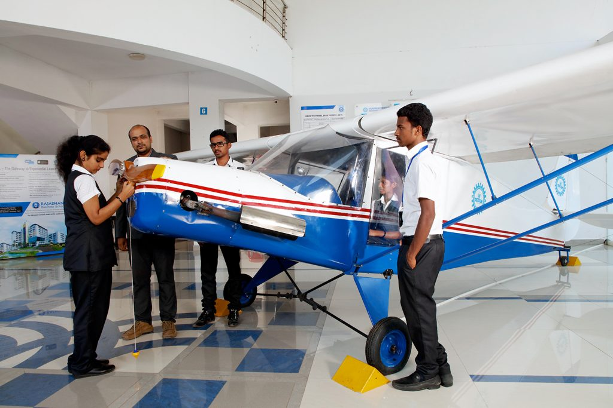

Engineering courses provide students with a comprehensive understanding of theoretical principles and practical applications across diverse disciplines such as civil, mechanical, electrical, and computer engineering.They are:
Computer science and engineering are closely intertwined fields that drive innovation in the digital age. Computer science focuses on the theory and application of computing, algorithms, and programming languages, delving into areas like artificial intelligence, data science, and software development. On the other hand, computer engineering combines elements of electrical engineering and computer science to design and develop hardware and software systems.

An Electrical and Computer Engineering (ECE) course is a dynamic academic program that integrates principles from both electrical engineering and computer science. Students in ECE delve into the study of electrical systems, electronic devices, and computer systems. The curriculum typically covers a broad range of topics, including circuit design, signal processing, communications, control systems, and digital systems. ECE students acquire a comprehensive understanding of hardware and software, enabling them to design and implement innovative solutions in areas such as telecommunications, robotics, and embedded systems. The interdisciplinary nature of the ECE course equips students with a versatile skill set, making them well-positioned for careers at the forefront of technology, where electrical and computer engineering principles intersect.
The Electrical and Electronic Engineering (EEE) course is a dynamic academic program that focuses on the principles and applications of electrical systems and electronic devices. EEE students delve into subjects such as circuit theory, power systems, electronics, and control systems. This comprehensive curriculum equips students with the knowledge and skills needed to design, analyze, and optimize electrical and electronic systems. From power generation and distribution to the development of electronic devices and communication systems, EEE students are prepared to tackle a wide array of challenges in the rapidly evolving field. The course emphasizes both theoretical foundations and practical applications, ensuring that graduates are well-prepared for impactful careers in industries ranging from energy to telecommunications.
Civil engineering involves the planning, design, and construction of infrastructure projects such as bridges, buildings, roads, and water systems. Civil engineers play a crucial role in shaping the physical environment, ensuring safety, sustainability, and functionality. The field encompasses diverse disciplines, including structural engineering, geotechnical engineering, and transportation engineering, contributing to the development and maintenance of essential societal structures.
Mechanical engineering is a branch of engineering that focuses on the design, analysis, and manufacturing of mechanical systems and devices. It encompasses a broad range of applications, from machinery and engines to HVAC systems and robotics. Mechanical engineers apply principles of physics and mathematics to develop solutions that address real-world challenges. This field plays a pivotal role in industries such as automotive, aerospace, energy, and manufacturing, shaping innovations in technology and contributing to the development of efficient and sustainable systems
Chemical engineering involves the application of principles from chemistry, physics, mathematics, and engineering to design, analyze, and optimize processes for the production of chemicals, materials, and energy. Chemical engineers work on a wide range of applications, including the development of new materials, pharmaceuticals, and sustainable energy solutions. They play a crucial role in industries such as petrochemicals, food and beverages, and environmental engineering.
Aeronautical engineering is a specialized field of engineering focused on the design, development, and maintenance of aircraft and spacecraft. Aeronautical engineers apply principles of aerodynamics, materials science, and propulsion systems to create efficient and safe flying machines. This discipline is essential for advancing aviation technology, from commercial airplanes to military jets and space exploration vehicles. Aeronautical engineers contribute to innovations in aircraft design, navigation systems, and propulsion technologies, ensuring the safety and efficiency of air and space travel.
 "click here"